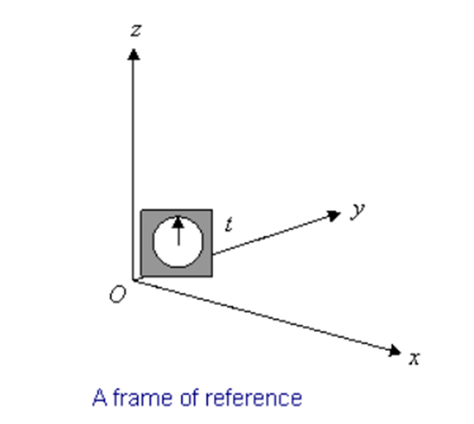
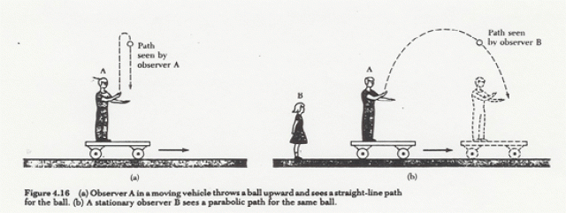
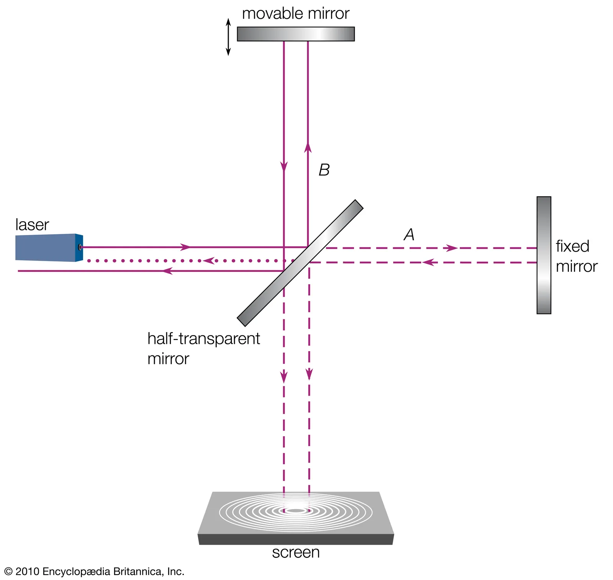
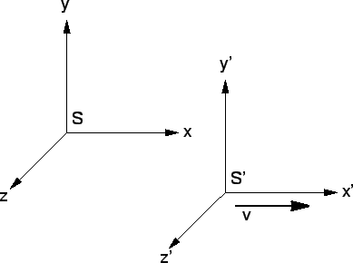

Introduction
Frames of reference are systems that indicate where events are observed and measured. A stationary reference system is needed because measured quantities such as velocity, and displacement vary from the point of view, depending on the reference system used as the basis. Reference systems are divided into active and inertial. In this study, these will be examined in detail. Galileo Transformation Formulas: “What would be the coordinates of an event taking place, given two frames of reference moving at a certain speed relative to each other?” They are formulas that are valid under certain conditions that answer the question. These formulas will be explained and interpreted with a mathematical background.
The Subject of the Study
The subjects of the study are examination of accelerated and non-accelerated motions of different reference systems relative to each other (investigation of inertial and inertial reference systems), and the mathematical examination and interpretation of Galileo Transformation Formulas.
Purpose of the Study
Recognition of different reference systems, determining under which physical conditions they will be valid; recognition, interpretation, and interpretation of Galileo Transformation Formulas; realizing that it is valid only at speeds less than the speed of light and introducing Special Relativity.
Reference Frame
A “frame of reference” is simply a set of coordinates. It is essential to develop the framework for measuring positions and velocities that is important in Newtonian problems.
Visual 1 (Fowler, 2020)
In order to interpret an event that takes place in space, its place and time must be known. A point is indicated by its three coordinates (x, y, z) and time (t): (x, y, z, t). (Fowler, 2020)
A frame of reference is a relative standard by which motion and stillness can be measured. Any point or set of objects that are at rest relative to each other, in principle, allows the relative motions of bodies to be described. A frame of reference is therefore a purely kinematic tool for the geometric description of motion, regardless of the masses or forces involved. (DiSalle, 2002)
Inertial Reference Frame
In classical physics and special relativity, an inertial frame of reference is a reference frame without acceleration. An inertial frame of reference is one on which the net force acting on it is zero. An inertial frame of reference can also be defined in analytical terms as a frame of reference that defines time and space in a homogeneous, isotropic, and time-independent manner (Inertial frame of reference, 2021). Conceptually, the physics of a system in an inertial frame has no effect outside the system.
All inertial frames are in constant, linear motion relative to each other; an accelerometer driven by any of these will detect zero acceleration. Measurements in one inertial frame can be transferred to measurements in another reference system with a simple transformation (Galileo transform in Newtonian physics and Lorentz transform in special relativity). In general relativity, in any region so small that the curvature of space-time and tidal forces are negligible, there can be a set of inertial frames that approximate that region. (Inertial frame of reference, 2021)
The laws of Newtonian dynamics provide a simple definition for an inertial frame of reference: an inertial frame is a time-scaled frame of reference in which the motion of a body that is not subjected to forces is always linear and uniform, while accelerations are always proportional. The applied forces and their directions are always countered by equal and opposite reactions. It follows that in an inertial frame the center of mass of a closed system of interacting bodies is always at rest or in uniform motion (Fnet = 0). It also follows that any other frame of reference that moves equally with respect to an inertial frame is also an inertial frame (DiSalle, 2002).
The world is accepted by humans as an inertial reference system. However, since there cannot be an absolute inertial reference system in the universe, the Earth is accepted as an inertial reference system, which is chosen as a common reference system when examining movements on earth. (Yilmaz, 2015)
Non-Inertial Reference Frame
An inertial frame of reference is one that is subject to acceleration relative to an inertial frame. An accelerometer at rest in an active frame will generally detect a non-zero acceleration. While the laws of action are the same in all inertial frames, in action frames they vary from frame to frame depending on the acceleration. In classical mechanics, it is often possible to explain the motion of bodies in inertial frames of reference by adding additional imaginary forces (also called inertial forces, pseudo-forces, and d'Alembert's forces) to Newton's second law. Common examples of this include the Coriolis force and the centrifugal force. In general, the expression for any imaginary force can be derived from the acceleration of the action frame. As Goodman and Warner point out, "if the term 'force' is redefined to include what are called 'reverse-acting forces' or 'inertial forces’, it can be said that F = ma holds in any coordinate system."
In classical physics and special relativity, in an inertial frame of reference, the physics of a system changes depending on the acceleration of that frame relative to an inertial frame, and ordinary physical forces must be supported by imaginary forces. For example, in classical physics, a ball falling towards the ground does not go all the way down because the Earth is spinning, which means that the reference frame of an observer on Earth is not inertial. Physics must take into account the Coriolis effect (in this case it's considered a force) to predict horizontal motion. Another example of such a fictitious force associated with rotating frames of reference is the centrifugal effect or centrifugal force (Non-inertial reference frame, 2020).
Newton Yasaları’nın Eylemli ve Eylemsiz Referans Sistemlerindeki Uygulamaları
The laws of physics are the laws of Newtonian mechanics, as expressed by Newton's Laws of Motion, with gravitational forces as well as contact forces from objects pushing against each other. For example, knowing the universal gravitational constant from the experiment (and related masses) is possible from Newton's Second Law. (F = m.a) (Fowler, 2020)
Newton's laws of motion apply only to inertial frames of reference. Inertial frames of reference make it possible to use either Newton's laws of motion or Lagrangian or Hamiltonian mechanics to develop the necessary equations of motion. There are some situations where it is much more convenient to process motion in an actionable reference frame. Examples are motion in reference frames subjected to translational acceleration, rotating reference frames, or frames that are subject to both translational and rotational motion. (Cline, 2020)
A similar phenomenon is the perception of different forces by observers in the inertial and inertial reference systems while interpreting the forces on rotating objects. For the observer in the inertial reference system, there is an imaginary force defined as centrifugal. In order to eliminate these imaginary forces and preserve the validity of Newton's laws, the reference system chosen should be an inertial reference system.
Newton's laws are valid in all inertial reference systems. The laws of mechanics must be the same in all inertial reference systems.
(Visual 2) (Kayalı, 2015)
Consider an example where there is person A walking on a moving system and an observer B watching this system from the outside. Person A has a ball in his hand and is throwing it up and holding it. The ball is going up and down steeply, at least that's what the passenger sees.
Observer B sees that the ball is in the air, but while the ball is making this move, the system is moving. In other words, the ball has a horizontal movement this time due to the movement of the train. It doesn't just move vertically. Therefore, from the outside observer's perspective, the ball follows a curved path as if it were an arrow thrown. But the observer in the system only sees the ball going up and down. In this case, there is a difference of opinion about the movement of the ball.
In this case, since principles such as Newton's laws and conservation of energy and momentum are valid, it seems that no mechanical experiment can explain the difference between these two inertial reference systems. The only thing that can be observed in this event is the movement of one system relative to the other. This means that the notion of an arbitrary reference system or of any absolute motion in space has no meaning. (Kayalı, 2015)
Michelson-Morley Experiment
In 1887, two physicists named Michelson and Morley prepared this experiment in order to find out whether there could be an absolute inertial reference system, about the stillness of space and ether matter.
Since light is an electromagnetic wave and it is not known whether a material medium is required for its propagation, it was thought that light propagates in the material medium by vibrations like mechanical waves. It was thought, then, that there must be something in space that makes light propagate and vibrate. It was thought that this could be a substance called ether and could be seen as a static reference system as it filled the entire space. If he were a prisoner, the speed of movement of the Earth relative to the ether could also be measured.
(Visual 3)
These two physicists designed a very sensitive experimental setup called an interferometer to carry out their experiments. In this setup; Light emanating from a light source was split into two light beams that followed paths of equal lengths perpendicular to each other. When the light beams bounced off and returned from their plane mirrors, they formed an interference pattern when they were reunited. If there was a difference in the velocities of the two light beams during their movement, there would have to be a shift in the interference pattern. No shift in the interference pattern was observed in the experiment. This result meant that two light beams traveling equal distances in perpendicular directions always move with equal velocities.
Although the experiment was accurate for detecting the expected ether current, the presence of one type of ether could not be observed. This result resulted in two determinations. First, he showed that the ether does not exist and therefore there can be no absolute motion relative to the ether, that all motions are not universal but according to a determined reference system. Second, this result revealed that the speed of light is the same for all observers, unlike sound and water waves, which require a material medium to form. (Yılmaz, 2015)
Galileo Conversion Formulas
It is assumed that there are two reference systems, denoted S and S', so that the coordinate axes are parallel. (As in image 6). “S” has coordinates {x, y, z, t} and “S ' ” has coordinates {x', y ', z', t '}. “S ' ” is moving relative to “S” with velocity V in the x direction (as measured in S). The times in both systems are synchronized at time t = 0 and they work the same.
The reference frame S' moves with velocity V (in the x direction) relative to the reference frame S':
(Visual 4)
Galileo Transformation formulas:
x' = x - vt
y' = y
z' = z
t' = t
(Visual 5)
The set of equations seen in Figure 5 is known as the Galileo Transform. It allows us to relate one measurement in one inertial frame of reference to another. For example, let's say we measure the speed of a vehicle moving in the x direction in the “S” system and we want to know what the speed of the vehicle in “S” will be.
v'x = dx'⁄dt' = d(x - vt)⁄dt = vx - v
(Visual 6)
The slope of the position-time graph gives the velocity. This means that the 1st derivative of the position with respect to time gives the velocity. In the equation in Figure 6, it is stated that the value of the velocity in the S' frame and the position gives the first derivative of time. He then expressed the position in the S' frame as "The position in the S frame - the path the frame takes into the process t". From here, it is found that "speed in S' frame = speed in S frame - speed of my reference system".
It is desirable that the laws of physics be the same in all inertial frames of reference. Physically, it must be able to perform the same experiments in different frames of reference and always have the same physical laws. Mathematically, these laws are expressed in equations. Therefore, equations should be able to be converted from one inertial frame of reference to another inertial frame of reference, and the same answer should always be found.
Suppose you want to check that Newton's Second Law is the same in two different frames of reference.
f' = m'a'
= m' d2x'⁄dt'2
= m' d⁄dt' (dx'⁄dt')
= m d⁄dt (d(x - vt)⁄dt)
= m d(vx - v)⁄dt
= m dvx⁄dt
= ma = f
(Visual 7)
Acceleration is the second derivative of position with respect to time because the slope of the position-time graph is velocity; The slope of the velocity-time graph also gives the acceleration. In the equation in Figure 7, the second derivative of the position in the S' system with respect to time is taken and multiplied by the mass. It has been shown that the force found here is the same as the force in the S system.
In fact, it does not matter from which frame of inertia we observe. The same Second Law of Motion is obtained each time. That is, the Second Law of Motion did not change under the Galileo Transformation. (Connel, 2006)
The most important point to note in the Galileo Transformation Formulas is that time is considered the same in both reference systems. This is a correct admission because of very, very minor differences in everyday events. But when these speeds approach the speed of light, things change. (Kayalı, 2015)
Applications of Galileo Transformation Formulas in Special Relativity, Electromagnetism and Lorentz Transform
In physics, the Lorentz transform is named after the Dutch physicist Hendrik Lorentz. It is the result of attempts by Lorentz and other scientists to explain how to observe the speed of light independent of the reference frame and to understand the symmetry of the laws of electromagnetism. The Lorentz transform is in harmony with special relativity. However, it was put forward before special relativity.
Transformations describe how the measurements of space and time measured by two observers are related. It reflects the fact that observers moving at different speeds can measure different lengths, elapsed times, or even different sequences of events. It replaces the Galileo transformation of Newtonian physics, which assumes absolute space and absolute time. The Galileo transform is only a good approximation at relativistic speeds much smaller than the speed of light. (Lorentz dönüşümü, 2021)
In Special Relativity, Lorentz Transform, and electromagnetism, in short, Galileo Transformation Formulas are not valid in the fields where speeds close to the speed of light are studied.
Conclusion and Summary
In this study, firstly, what the reference system is and why we need a reference system is mentioned. The two types of reference frames, inertial and inertial reference systems, are explained. It is mentioned how Newton's fundamental laws are valid in different reference systems. Explaining the Michelson-Morley experiment, it is stated why the Earth and space cannot be a fixed reference system. Then, Galileo Transformation Formulas are explained and by using this system, it is given mathematically that Newton's Second Law will be valid in both (S and S') systems. Finally, it is stated that the Galileo Transform is only valid at speeds less than the speed of light, that is, it can be used in the analysis of events that are generally encountered in daily life.
References
- Cline, D. (2020, Aralık 30). 12.1: Introduction to Non-inertial Reference Frames. LibreTexts: https://phys.libretexts.org/Bookshelves/Classical_Mechanics/Book%3A_Variational_Principles_in_Classical_Mechanics_(Cline)/12%3A_Non-inertial_Reference_Frames/12.01%3A_Introduction_to_Non-inertial_Reference_Frames.
- Connel, S. (2006, Şubat 21). The Galilean Transformation. Particle Solids Interactions group: http://psi.phys.wits.ac.za/teaching/Connell/phys284/2005/lecture-01/lecture_01/node5.html.
- Coriolis force. (2021, Nisan 1). Wikipedia, the free encyclopedia: https://en.wikipedia.org/wiki/Coriolis_force.
- DiSalle, R. (2002, Mart 30). Space and Time: Inertial Frames. Stanford Encyclopedia of Philosophy.
- Eylemsizlik kuvveti. (2021, Mart 3). Vikipedi, özgür ansiklopedi: https://tr.wikipedia.org/wiki/Eylemsizlik_kuvveti.
- Fowler, M. (2020, Eylül 9). Frames of Referance and Newton's Laws. LibreTexts: https://phys.libretexts.org/Bookshelves/Relativity/Supplemental_Modules_(Relativity)/Miscellaneous_Relativity_Topics/Frames_of_Reference_and_Newton%E2%80%99s_Laws.
- Inertial frame of referance. (2021, Şubat 19). Wikipedia, the free encyclopedia: https://en.wikipedia.org/wiki/Inertial_frame_of_reference.
- Işık hızı. (2021, Mart 13). Vikipedi, özgür ansiklopedi: https://tr.wikipedia.org/wiki/I%C5%9F%C4%B1k_h%C4%B1z%C4%B1.
- Kayalı, Ö. (2015, Nisan 4). Özel Görelilik 1: Referans Sistemleri. Kozmik Anafor: https://www.kozmikanafor.com/ozel-gorelilik-1-referans-sistemleri/.
- Lorentz dönüşümü. (2021, Mart 13). Vikipedi, özgür ansiklopedi: https://tr.wikipedia.org/wiki/Lorentz_d%C3%B6n%C3%BC%C5%9F%C3%BCm%C3%BC.
- Michelson-Morley Deneyi Nedir? https://www.dunyaatlasi.com/michelson-morley-deneyi-nedir/.
- Non-interial referance frame. (2020, Aralık 14). Wikipedia, the free enclopedia: https://en.wikipedia.org/wiki/Non-inertial_reference_frame.
- Yılmaz, A. (2015, Ocak 27). Özel Görelilik. Fizik. Net. Tr: https://www.fizik.net.tr/site/ozel-gorelilik/.